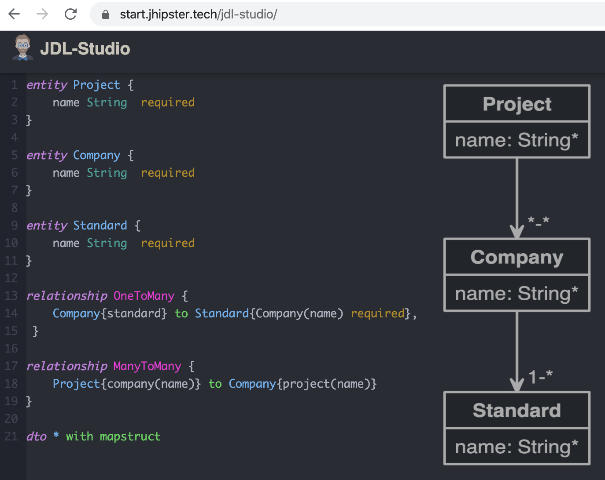
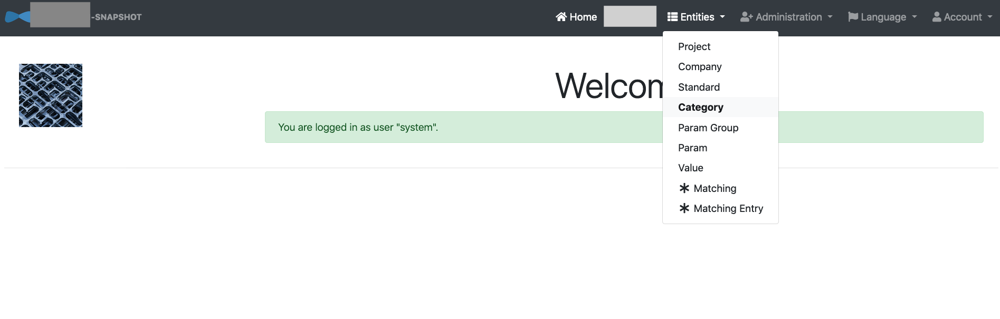

JHipster
Yuqiu (Yucho)
Polls
Thumbs up
- Frontend, e.g. JS/TS
- Full Stack, e.g. Angular, Sprint Boot
- previous experience with JHipster
IT-ECONOMICS
Telling from a developer perspectivei ndividual
t dd
-
e mergent
c lean
o n-site
n etworking
o ne-team-day
m obile
i tCon
c sd
s crum
own coding vs Code Generators
coding on my own is fun
- my own code
- tdd
... where my code slows me down
- time is money
- bugs
- crud functions
Where Code Generators are great
- simplification
- productivity
- consistency
... where not so much
- test coverage
- domain specific language
what if ... There is a code generator that generates CRUD functions and lots of TESTS!
JHipster
Full Stack Generator
- Spring Boot Backend
- SPA Frontend
- Operations
- Unit-, I-, UI-Tests
Project Chronicles
- effort estimation
- architecture
Project Chronicles
- effort estimation
- architecture
- check out JHipster
Project Chronicles
- effort estimation
- architecture
- check out JHipster
- generator-jhipster
generator-jhipster (1)

generator-jhipster (2)
{"generator-jhipster": {
"jhipsterVersion": "6.1.2",
"applicationType": "monolith",
"serverPort": "8080",
"authenticationType": "jwt",
"enableHibernateCache": true,
"databaseType": "sql",
"devDatabaseType": "h2Disk",
"prodDatabaseType": "postgresql",
"buildTool": "maven",
"useSass": true,
"clientPackageManager": "npm",
"clientFramework": "angularX",
"testFrameworks": ["cucumber", "gatling", "protractor"], // JUnit, Jest default included
"jhiPrefix": "jhi",
"dtoSuffix": "DTO", // MapStruct
"enableTranslation": true,
"nativeLanguage": "de",
"languages": ["de", "en"]
}}
Project Chronicles
- effort estimation
- architecture
- check out JHipster
- generator-jhipster
- generate entity relationships (jdl)
JHipster Domain Language (1)
entity Project {
name String required
}
// create entities: Company & Standard in the same way...
relationship ManyToMany {
Project{company(name)} to Company{project(name)}
}
relationship OneToMany {
Company{standard} to Standard{company(name) required}
}
dto * with mapstruct
JHipster Domain Language (2)
Generation results (1)
- Angular
- Component
- Service
- Entity
- Bootstrap
- form validation
- i18n
Generation results (2)
Project Chronicles
- effort estimation
- architecture
- check out JHipster
- generator-jhipster
- generate entity relationships (jdl)
- deploy to the cloud
Project Chronicles
- effort estimation
- architecture
- check out JHipster
- generator-jhipster
- generate entity relationships (jdl)
- deploy to the cloud
- add business logic
- make UI enhancements
- done in 30 working days (240 hours)
Conclusion
- advantages
- challenges
Where JHipster shines (1)
- simplification, productivity, consistency
- rapid prototyping
- production-ready
- RESTful
- latest frameworks: AngularJs -> Angular
Where JHipster shines (2)
- differentiates from other (yeoman) generators:
- fullStack
- foundation for TDD: Unit-, I- and UI-Tests
- password
- ng-mock
challenges
- experience with Spring Boot
- and at least 1 SPA-Framework
- crud web pages: not responsive on mobile clients
- understanding:
- jdl
- JHipster way of writing code
Find out on your own
- too much features
- utilize JHipster in an ongoing project with its blueprints
- demarcation of issues between JHipster specific and underlying frameworks
- if JHipster takes over everything, then where is the fun part?
Sometimes it does feel like
but you can get help from
JHipster GitHub Issue Page (bugs)and
StackOverflow (questions)
Marketplace
https://www.jhipster.tech/modules/marketplace/- Angular Material Integration
- generator-jhipster-nav-element
Any Questions?
slides on: https://geyuqiu.github.io/jhipster-in-action/yge@it-economics.de